Единый Компенсационный Центр
Единый Компенсационный Центр
Возврата Налога Добавленной Стоимости
Вы уже получили компенсацию?
Получить компенсацию Н.Д.С. от 12 000 руб до 300 000 руб можно не позднее июня 2020 г. Сумма начисляется за последние 48 месяцев.
Проверить свою компенсациюДо конца предложения осталось: